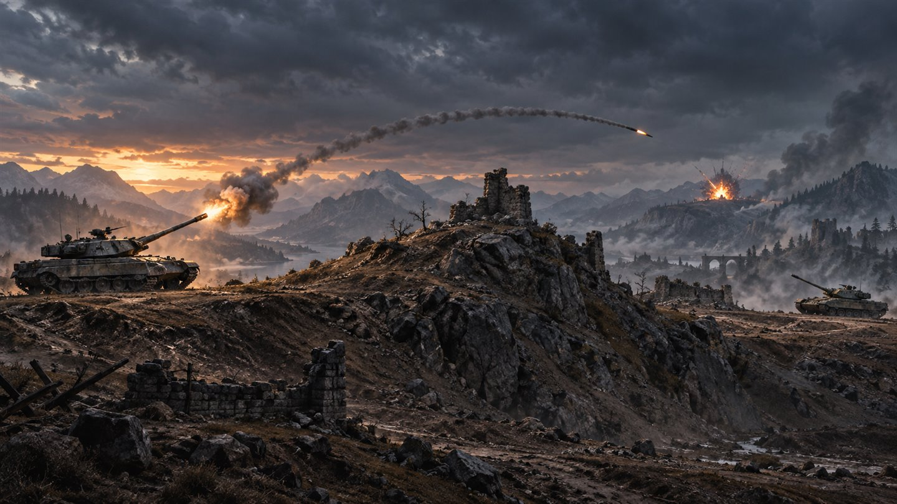
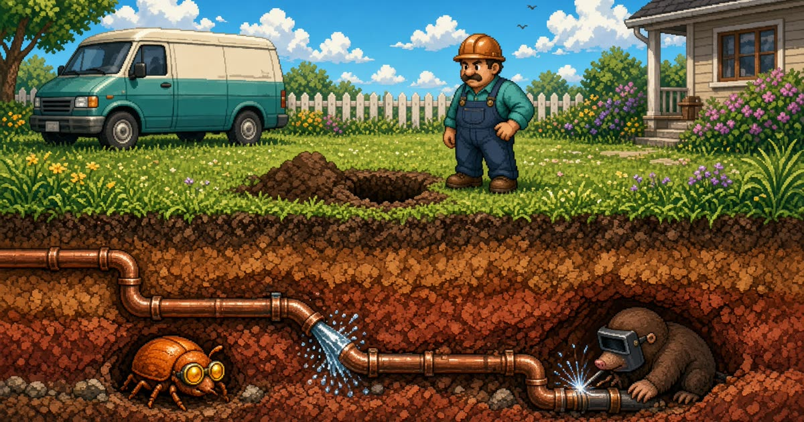
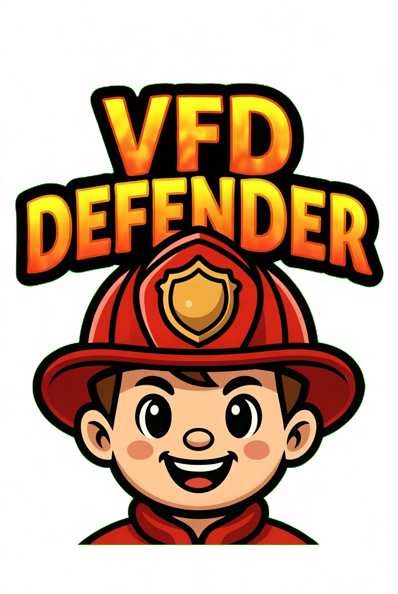
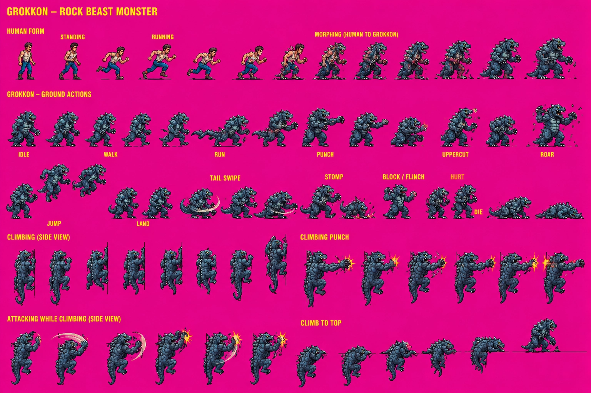

Game directory
Big worlds. Small browser tab.
Playable games, works in progress, builders, and classics. Start with a finished favorite or try something still taking shape.

Tank Games collection Three separate tank gamesPlay now
Current games.
Tank Games
Choose the original side-view classic, V2 Warfront, or the separate 3D Crater Basin build.

JR's Plumbing
Wastewater repair arcade: dig, patch the main, and make it out.

VFDDefender
Standalone fire-response campaign build.

Tanks and More Tanks
The original turn-based tank game, preserved as its own playable build.
Snake
Classic snake in a simple modern browser build.

PD Witness Recall
A training-style memory and recall game.

Smugglerscoat
Trading strategy with city routes, gear, and risk.

Monsters Unlimited
Mobile-first giant monster city-smashing prototype with builder.
Preview builds
All previewsFuture trips.
 Archive
ArchiveProjects kept in view.
Patrol and other earlier builds are retained as archived work rather than presented as current development.